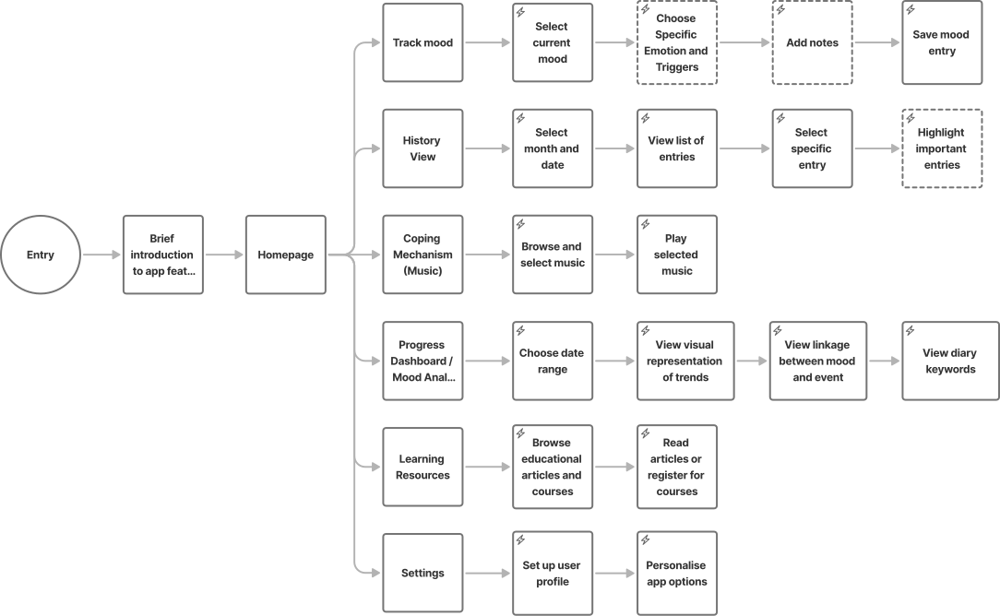

Emotion Tracking App
(For the best experience, please view this case study on a larger screen.)

Introduction
I designed an emotion tracking app for Light Sources Limited, a self-development education center that helps children and adults better manage their emotions and behavior. As the sole designer, I handled all aspects of the project—from research and asset selection to copywriting—creating a development-ready application. The app is currently in development.
Problem
In Hong Kong, more and more people are facing emotional challenges. While experts can assist those in need, it's crucial for individuals to recognize their own emotions and understand the underlying causes. This self-awareness isn't easy to achieve! Could an app help people become more conscious of their emotional fluctuations?
Research
Starting from basic, what is emotion management?
To understand the subject better, I attended an online course taught by a professional counsellor. Through the course, I learned that emotion management consists of four main steps.
Step 1: Identify emotion
Identify and name specific emotions, rather than just labeling them as 'good' or 'bad'.
Step 2: Understand emotion
Recognizing the root cause of an emotion, for example anger towards someone might actually stem from an underlying fear.
Step 3: Adjust emotion
Regulate the emotion before reacting.
Step 4: Express emotion
Recognizing the root cause of an emotion, for example anger towards someone might actually stem from an underlying fear..
What problems do people face when managing emotions?
Based on the online resources, people struggle with managing their emotions at each of the steps mentioned above.
- They struggle to name their emotions, either because they don't know different emotion types or lack the awareness to identify them.
- Many struggle to understand what triggers their emotions.
- They have difficulty managing their emotional responses before acting.
- They're unsure about appropriate ways to express their emotions and whom to share them with.
Based on the research results, I aim to design an app that addresses each identified difficulty. Additionally, we hope this app will expand the learning center's business by increasing the reach of their educational resources.
User-Centered Design Insights
Who are we targeting?
According to the Learning Center, this app should be accessible to both young teenagers and mature adults. Understanding our target audience is crucial, and since the age range is wide, I decided to focus on the group that represents most users—adults. I created a persona named Claire, inspired by real-life examples.
How is Claire addressing her challenges?
Claire is frustrated with her anger issues and her relationship with her husband. She is seeking ways to find help. Below is a possible process of how Claire might use our app to assist her in managing these challenges.
In what ways can the app support Claire in developing healthier coping mechanisms for her anger?
Based on the research and analysis of Claire’s user journey, I believe that our app should provide the following value to help her better manage her emotions. The app should:
- Assist her in understanding her triggers and emotional patterns, such as identifying topics she is sensitive to or times of the month when she tends to be in a bad mood.
- Provide effective coping strategies that Claire can use whenever she is feeling down.
- Include clear progress monitoring, allowing Claire to track her emotional growth over time.
- Offer reliable educational resources related to emotional well-being.
- Incorporate reminders or encouragement mechanisms to promote regular use of the app.
- Foster community support by connecting her with other users who share similar experiences.
- Provide a user-friendly interface that is intuitive and easy to navigate.
App Design
What features should be included to effectively address Claire's needs?
- Mood Identification: Provides different mood types so Claire can gain better clarity on what emotions she is experiencing.
- Triggers Identification: Establishes a link between emotions and triggered events.
- Mood Journal: A dedicated space for her to express her thoughts and feelings more freely.
- Progress Dashboard: Allows her to track her emotional fluctuations and mood trends over time.
- Encouragement Mechanism: Encourages Claire to use the app regularly.
- Coping Strategies: Offers ways to help her calm down during challenging moments. According to the learning centre, they prefer to use music to sooth user’s emotion.
- Educational Resources: Provides knowledge related to emotion management.
- Community Support: A place for her to share experiences and navigate life’s difficulties together with others.
- Personalisation Options: Allows her to customise the app to suit her preferences.
What steps does Claire need to take to navigate the app and achieve her emotional management goals?
I created this user flowchart to showcase the main features and flow of the app.
What if we could visualize the user journey before building the final product? Let’s dive into the wireframes!
I have created wireframes for the major features. Below are some examples of them.